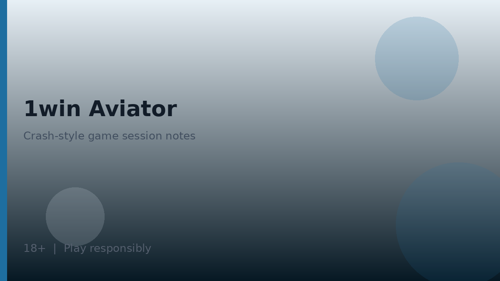

1win casino lobby: how to read categories
1win casino pages are easiest to navigate when you treat the lobby as a library rather than a single game. Categories usually group slots, table games, live dealer rooms, jackpots if offered, and instant or crash titles. Filters and search boxes matter more than banners: they help you open information screens, compare stake limits shown for your account, and avoid depositing into a title you have not inspected.

Affiliate disclosure: partner links may appear near product mentions or ratings on this page. Commissions never justify inventing providers, RTP figures, or licence numbers. Verify studio names and paytable details inside each game’s information panel on the live operator site.
A calm first session looks like this: browse categories, open two or three information panels, note minimum stakes, and only then decide whether a small deposit fits your entertainment budget. If a demo mode is available for a title, use it to learn controls without pressure. If demo is not available, read the rules text carefully before staking.
Internal links worth keeping open while you read: return to the 1win homepage for the product map, review 1win app notes if you play on mobile, and skim bonus code 1win before opting into any casino promotion. Also compare geo notes on 1win argentina when payment methods look region-specific.
Lobby artwork is marketing. The useful artefacts are the help screen, the stake selector, any volatility or feature descriptions the studio publishes in-client, and the cashier rules that govern how winnings move. Keeping those four artefacts in view prevents most beginner confusion in a 1win casino session.
Live casino versus RNG titles
Live casino streams place a human dealer or host in a studio while you place bets through the interface. RNG titles resolve outcomes through random number generation without a live feed. Both can be entertaining; they differ in pace, connection needs, and social presentation.
| Aspect | Live casino | RNG casino titles |
|---|---|---|
| Presentation | Video stream with dealer or host | Animated or video-slot style client |
| Pace | Tied to table rhythm and dealing speed | Often faster rounds under player control |
| Connection | Stable bandwidth helps avoid disconnects mid-round | Usually lighter than live video |
| Limits | Table min/max shown in lobby or seat UI | Stake steps shown in game controls |
| Information | Table rules and side-bet sheets | Paytable and feature descriptions in help |
Do not invent expectations about which studios supply tables. Provider line-ups change by region and over time. If a studio logo appears in the lobby, treat it as a label to confirm in the game client rather than as a claim we certify here.
- Check table limits before joining a live seat.
- Confirm whether side bets are optional and how they settle.
- On RNG titles, open the help or information screen for feature rules.
- Keep stake sizes consistent with a pre-set session budget.
- Leave a table if stream quality is poor enough to cause mis-clicks.
Crash and instant games sometimes sit beside the 1win casino lobby or inside a dedicated instant section. Their round structure is different from classic slots; see 1win aviator for a responsible explanation of rising-multiplier mechanics.
Slots, tables, and crash games without invented catalogues
Slots typically emphasise themes, feature rounds, and variable pacing. Table games such as roulette or blackjack variants emphasise rule sets and bet types. Crash games emphasise a shared multiplier path and a cash-out decision. None of these categories removes the house edge, and none rewards so-called systems that claim otherwise.
| Category | What to inspect | Common caution |
|---|---|---|
| Slots | Stake steps, feature triggers described in help | Headline multipliers are rare outcomes, not typical results |
| Table games | Rule variant, side bets, table limits | Side bets can carry different edges—read before enabling |
| Jackpots if shown | Contribution and eligibility text | Jackpot rules vary; verify on the title itself |
| Crash / instant | Cash-out behaviour and round timing | High variance; set strict session limits |
- Pick a category that matches the pace you want for the session.
- Open one title and read its information panel fully.
- Decide stake size before the first spin or hand.
- Stop when your pre-set time or loss limit is reached.
- Record anything unclear and ask support rather than guessing.

We intentionally avoid listing unverified studio names or RTP percentages. If a percentage appears in a game help screen, that figure belongs to that title’s disclosed documentation—not to a global promise about the whole 1win casino lobby.
Payments and cashier notes at a high level
Payment options for 1win casino deposits and withdrawals depend on region, account status, and what the cashier currently displays. Do not rely on third-party blogs for exact methods, fees, or speeds. Open the cashier while logged in and read the methods offered to you.
| Check | Why | Practical tip |
|---|---|---|
| Method ownership | Third-party deposits cause disputes | Use accounts in your own name |
| Minimum amounts | Offers and withdrawals may reference mins | Read on-screen values; check T&Cs for offers |
| Verification status | KYC can pause withdrawals | Upload clear documents only through official flows |
| Currency display | Avoid conversion surprises | Confirm wallet currency shown in cashier |
| Pending withdrawals | Some sites cancel pending cashouts if you re-bet | Read withdrawal rules in terms |
- Complete any requested identity checks promptly with valid documents.
- Keep screenshots of cashier confirmations for your records.
- Avoid public Wi-Fi for payment steps when possible.
- If a method disappears, assume regional or risk controls changed—ask support.
Promotions tied to casino deposits often include wagering, game weighting, expiry, and maximum conversion rules. Those numbers belong in the operator T&Cs. Our bonus code page explains how to read them without inventing figures.
KYC, account integrity, and responsible casino habits
Know Your Customer checks exist to confirm identity, age, and sometimes payment ownership. Being asked for documents is normal for real-money platforms. Provide documents only through official account channels. Nobody legitimate needs your password to speed up KYC.
- Prepare a clear photo or scan of an accepted identity document.
- Match the name on the account to the name on the document.
- Use payment methods you personally control.
- Respond to follow-up requests in the account message centre.
- Do not send documents through informal chat apps suggested by strangers.

Responsible habits for 1win casino sessions include time caps, deposit caps, and refusing to chase losses after volatile slots or crash rounds. If play stops feeling optional, use the operator’s limit or exclusion tools and seek independent support resources appropriate to your country. Adults aged 18+ only may hold accounts.
- Set a session timer before opening the lobby.
- Decide a maximum loss for the day and stop when it is hit.
- Prefer shorter sessions when trying unfamiliar high-volatility titles.
- Revisit is 1win legal in argentina if your location or rules change.
- Return to 1win login guidance if account access becomes unreliable.
Casino entertainment works best when treated as a paid leisure activity with a clear budget. That mindset protects both your finances and your ability to enjoy the lobby on your own terms, whether you play on desktop or through the 1win app.
If you leave the lobby to check sports results or crash rounds, return with the same stake discipline you started with. Switching products mid-session is fine; resetting your budget mid-session is how entertainment spending quietly expands beyond the plan you made while calm.
Further practical notes for careful readers
Readers using 1win casino materials as orientation should keep three habits in parallel: verify the official access path, set entertainment budgets before depositing, and re-read operator terms whenever a promotion or product area changes. Those habits travel with you from homepage summaries into specialist articles without requiring you to memorise every interface label.
When something on a third-party site conflicts with the live cashier or written terms, favour the live product and the written terms. Screenshots age quickly. Informal chat summaries omit footnotes. Your own notes, dated and linked to the version of the terms you saw, will serve you better during support conversations than a collage of social-media claims.
Product-area map you can reuse on any visit
Whether you open sports, casino, live tables or crash titles, keep the same mental map: entertainment first, verification second, stake size third. The diagram below summarises the product buckets most multi-vertical brands expose inside one account.
- Sports needs market-rule literacy before kick-off or tip-off.
- Casino lobbies need info-panel reading before the first spin.
- Live tables add connection quality as a practical factor.
- Crash titles add a cash-out timing decision that does not remove house edge.
| Check | What good looks like | Red flag |
|---|---|---|
| Domain authenticity | Typed or bookmarked official URL | Links from cold DMs or pop-ups |
| Age gate | Clear 18+ requirement before play | No age notice anywhere |
| Responsible tools | Deposit/loss/time limits visible | No limit controls at all |
| Terms access | Bonus and account terms linked near offers | Promo claims without T&Cs |
Evaluation sequence before any deposit
A calm sequence beats improvisation. Work left to right through domain authenticity, age eligibility, cashier visibility, limit tools and written terms. Skipping a step is how phishing pages and misunderstood bonuses slip through.
- Confirm you are on a genuine domain.
- Confirm you meet the 18+ requirement where you live.
- Open the cashier and note methods shown to your account.
- Locate deposit, loss and time-limit tools if offered.
- Read bonus and account terms before accepting any offer.
| Parameter | Safer habit | Why |
|---|---|---|
| Bankroll | Set a loss limit before opening the lobby | Stops chase behaviour mid-session |
| Time | Use a reality-check or phone timer | Short rounds compress time perception |
| Games | Pick one product area per session | Reduces impulsive switching |
Responsible gambling
18+. Casino games, sports betting and crash titles discussed on this site are intended for adults aged 18 and over only. Gambling can be addictive - please play responsibly and never stake more than you can afford to lose.
- International support information: BeGambleAware.
- Advice and treatment resources: GamCare.
- If you are in Argentina, also look for locally available counselling and helpline resources through public health channels, and use any deposit/loss/time limits the operator provides.
1win Argentina Guide publishes informational reviews and checklists. We do not invent licence numbers or claim UK Gambling Commission status for operators without verification in data/casinos/. Nothing on this site is financial or gambling advice, and no outcome is promised.